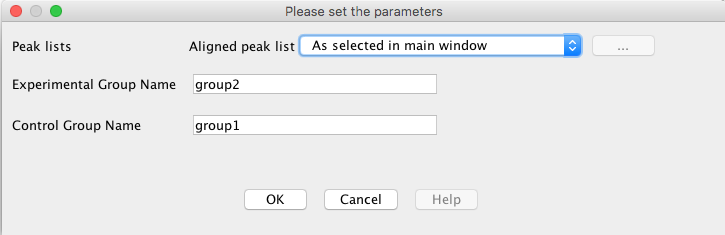

This module calculates significance values of aligned features. Two significance tests are used:
Mummichog is an algorithm for analyzing data from high throughput, untargeted metabolomics. It leverages the
organization of metabolic networks to predict functional activity directly from feature tables, bypassing metabolite
identification. Thus, high-quality hypotheses can be quickly generated from a LC-MS data table. The algorithm runs
on the Aligned peak lists and performs Modular and Pathway analysis using an existing Human or Worm metabolical
networks. The calculation edits the aligned peak list with addition in compound information against each
mz-retion_time row. The calculation also prpduces three csv files which have the list of empirical compunds, top
modules from modular analysis and the results from pathway analysis.
The algorithm was first developed in python. For more information visit the below link.
http://mummichog.org/
